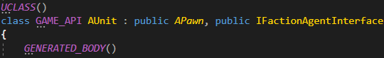

Implementation
Blueprints
Check the Test Project for an in-engine example
Adding the interface
For an actor to have a faction, we need to add a FactionAgentInterface. This will allow the system to set and get the current interface.


To add an interface we have to go into Class Settings
From here we click on Add, inside Interfaces and search for FactionAgentInterface
Getting and Setting the Faction
Factions require your actor to define how to get and set a faction. That can be done overriding GetFaction and SetFaction.
A common implementation would be to have a variable (of type "Faction"), and then return it with GetFaction and set it with SetFaction:


Factions in Controllers
Sometimes you may want a controller to share a faction with its controlled pawn or character.
This process is exactly the same as before, except that instead of getting and setting a variable, we will get and set the faction from our pawn.
C++
Adding the interface
Add IFactionAgentInterface to any Actor:

Getting and Setting the Faction
In order for the system to read our faction, we need to provide a getter and a setter. The returned variable depends on what your code needs.

A common case is to have a Faction variable exposed to the editor (like in the example). You could also set dependent factions by getting another actor's Faction (e.g Inside a controller).
Using Factions without Actors
Non-actor objects can also have factions, but they can't be called though normal API functions for simplicity. This means that, for example, a component could have a faction, but only Actors can be checked for attitude.
This is useful for modularizing Actor logic inside components, distributing faction logic.